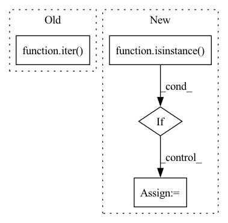

Pattern ID :26247
Before Change
output_names = ["output"]
elif isinstance(out, Iterable):
output_names = [
"output_{}".format(index) for index, _ in enumerate(iter( out) )
]
// disable active quantization observers because they cannot be exportedAfter Change
input_names = None
if isinstance(sample_batch, Tensor):
input_names = ["input"]
elif isinstance( sample_batch, Dict) :
input_names = list(sample_batch.keys())
sample_batch = tuple([sample_batch[f] for f in input_names])
elif isinstance(sample_batch, Iterable):
input_names = [
"input_{}".format(index) for index, _ in enumerate(iter(sample_batch))In pattern: SUPERPATTERN
Frequency: 3
Non-data size: 4
Instances Fragment ID: 79016485
Project Name: neuralmagic/sparseml
Commit Name: 1f45a58f910904b5a9188cc634f6a8e96c461d0d
Time: 2021-07-16
Author: tuan@neuralmagic.com
File Name: src/sparseml/pytorch/utils/exporter.py
M Class Name: ModuleExporter
N Class Name: ModuleExporter
M Method Name: export_onnx(6)
N Method Name: export_onnx(6)
M Parent Class: object
N Parent Class: object
M File Name: src/sparseml/pytorch/utils/exporter.py
N File Name: src/sparseml/pytorch/utils/exporter.py
M Start Line: 195
M End Line: 211
N Start Line: 201
N End Line: 233
Before Change
self.testloader = DataLoader(test_data, self.batch_size, drop_last=True)
self.trainloaderfull = DataLoader(train_data, self.batch_size, drop_last=False)
self.testloaderfull = DataLoader(test_data, self.batch_size, drop_last=False)
self.iter_trainloader = iter( self.trainloader)
self.iter_testloader = iter(self.testloader)
def set_parameters(self, model):After Change
// check BatchNorm
self.has_BatchNorm = False
for layer in self.model.children():
if isinstance( layer, nn.BatchNorm2d) :
self.has_BatchNorm = True
break
self.train_slow = kwargs["train_slow"]
self.send_slow = kwargs["send_slow"]
self.train_time_cost = {"num_rounds": 0, "total_cost": 0.0}
self.send_time_cost = {"num_rounds": 0, "total_cost": 0.0}
self.privacy = args.privacy
self.dp_sigma = args.dp_sigma
self.sample_rate = self.batch_size / self.train_samples
Fragment ID: 79016497
Project Name: tsingz0/pfl-non-iid
Commit Name: 4f394efe04f30dbd3cab4278467631854f997903
Time: 2022-01-14
Author: 2719584131@qq.com
File Name: system/flcore/clients/clientbase.py
M Class Name: Client
N Class Name: Client
M Method Name: __init__(5)
N Method Name: __init__(11)
M Parent Class: object
N Parent Class: object
M File Name: system/flcore/clients/clientbase.py
N File Name: system/flcore/clients/clientbase.py
M Start Line: 12
M End Line: 32
N Start Line: 19
N End Line: 46
Before Change
pin_memory=True
)
self.data_loader_list.append(_dataloader)
self.dataloader_iter_list.append(iter( _dataloader) )
@staticmethod
def divide_datasets(dataset_list, eachusage):After Change
class BaseDataloader(object):
def __init__(self, dataset, batch_size, each_usage, num_workers=4, shuffle=False):
if isinstance( each_usage, (float, int)) :
each_usage = [each_usage]
assert isinstance(each_usage, list)
assert len(dataset) == len(each_usage)
self.dataloader_iter_list = [] Fragment ID: 79016488
Project Name: media-smart/vedastr
Commit Name: 46b30f8dd844edf2d91d2f711ba88fd58f101ab4
Time: 2020-04-19
Author: 15029959637@163.com
File Name: vedastr/dataloaders/base.py
M Class Name: BaseDataloader
N Class Name: BaseDataloader
M Method Name: __init__(6)
N Method Name: __init__(7)
M Parent Class: object
N Parent Class: object
M File Name: vedastr/dataloaders/base.py
N File Name: vedastr/dataloaders/base.py
M Start Line: 9
M End Line: 28
N Start Line: 10
N End Line: 16